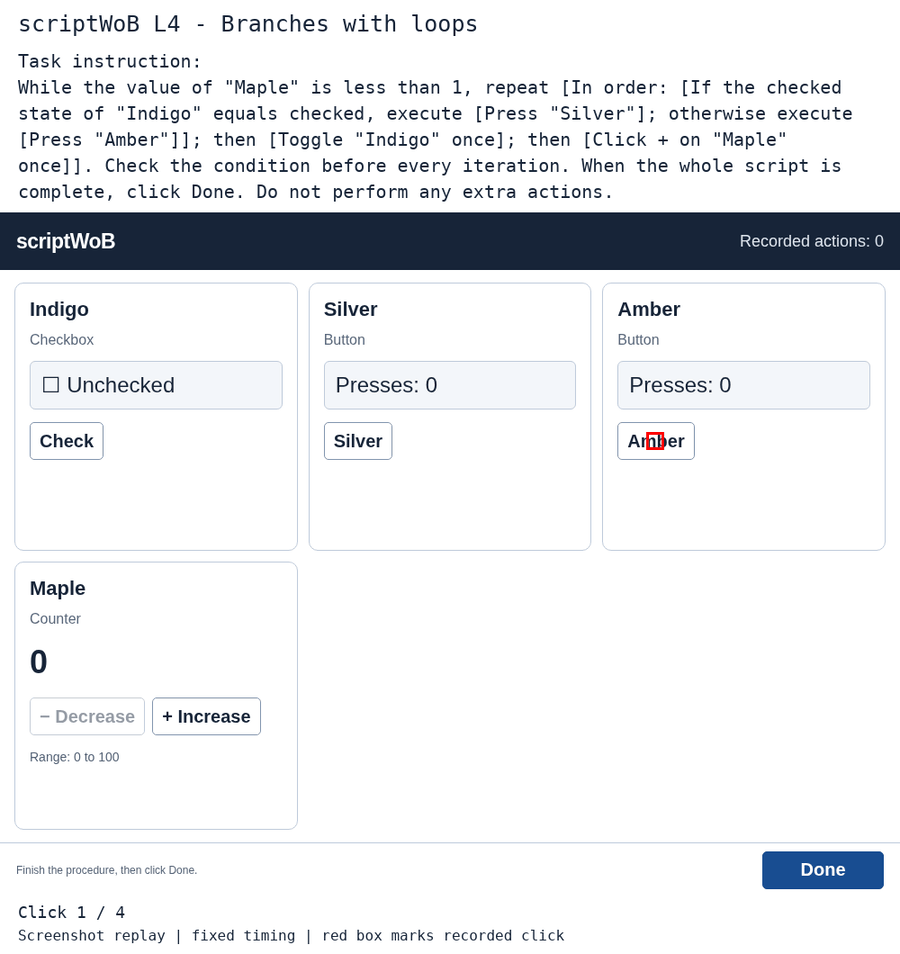
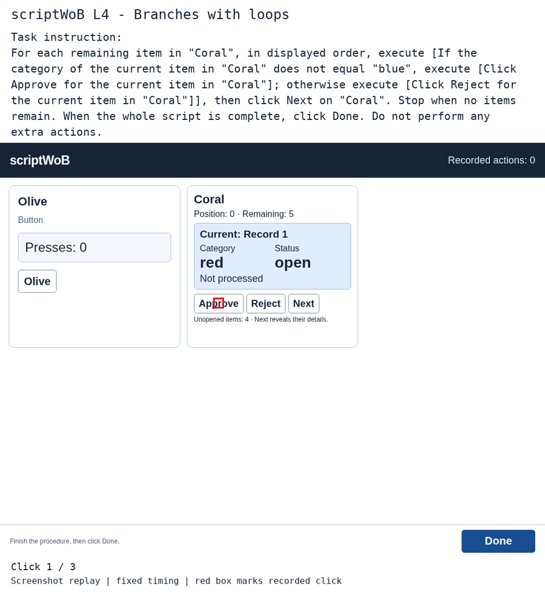
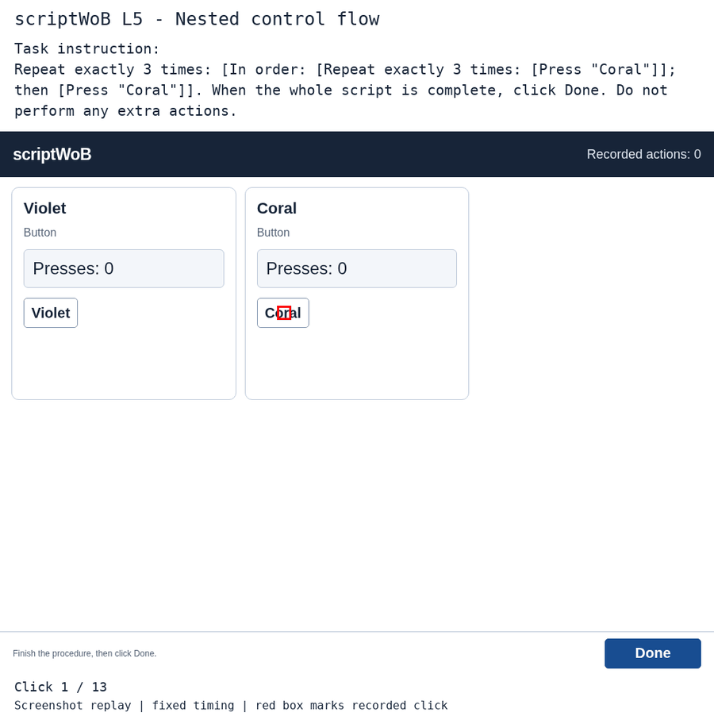
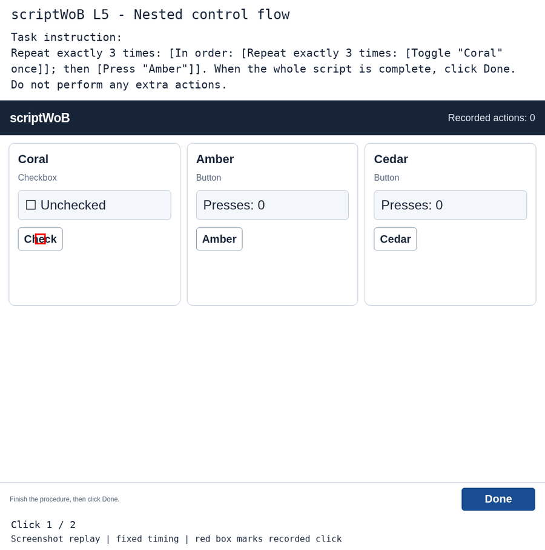

scriptWoB: prompts and example replays
A selected successful SeeClick rollout for each script level, plus an unsuccessful
rollout wherever one exists. These illustrate tasks and errors; they are not a
representative sample of model performance. Paired examples are different task instances.
Videos reconstruct saved screenshots with the recorded click locations marked in red.
Each click is shown for 1.6 seconds; this is illustrative playback, not original timing.
Successful tasks end with Done; failed trials can stop earlier. Instructions are copied
verbatim from saved episodes. Failure notes describe recorded behavior, not model reasoning.
The model also receives the current screenshot and executed-click history. Prompt files
reconstruct the first step using the exported image path; later steps include click history.
L4: Branches with loops
Successful example
while_if · dev · 4 clicks
While the value of "Maple" is less than 1, repeat [In order: [If the checked state of "Indigo" equals checked, execute [Press "Silver"]; otherwise execute [Press "Amber"]]; then [Toggle "Indigo" once]; then [Click + on "Maple" once]]. Check the condition before every iteration. When the whole script is complete, click Done. Do not perform any extra actions.
GIF with task instruction

GIF with instruction ·
MP4 replay ·
Exact task instruction ·
First-step model-format prompt ·
Source details
Unsuccessful example
foreach_if · dev · 3 clicks
Approved blue Record 2 at step 3; the script required rejecting blue items.
For each remaining item in "Coral", in displayed order, execute [If the category of the current item in "Coral" does not equal "blue", execute [Click Approve for the current item in "Coral"]; otherwise execute [Click Reject for the current item in "Coral"]], then click Next on "Coral". Stop when no items remain. When the whole script is complete, click Done. Do not perform any extra actions.
GIF with task instruction

GIF with instruction ·
MP4 replay ·
Exact task instruction ·
First-step model-format prompt ·
Source details
L5: Nested control flow
Successful example
nested_repeat · dev · 13 clicks
This example uses nested counts on the same button: twelve Coral presses, then Done.
Repeat exactly 3 times: [In order: [Repeat exactly 3 times: [Press "Coral"]]; then [Press "Coral"]]. When the whole script is complete, click Done. Do not perform any extra actions.
GIF with task instruction

GIF with instruction ·
MP4 replay ·
Exact task instruction ·
First-step model-format prompt ·
Source details
Unsuccessful example
nested_repeat · dev · 2 clicks
Pressed Amber at step 2 after one Coral toggle, before completing three inner-loop toggles.
Repeat exactly 3 times: [In order: [Repeat exactly 3 times: [Toggle "Coral" once]]; then [Press "Amber"]]. When the whole script is complete, click Done. Do not perform any extra actions.
GIF with task instruction

GIF with instruction ·
MP4 replay ·
Exact task instruction ·
First-step model-format prompt ·
Source details